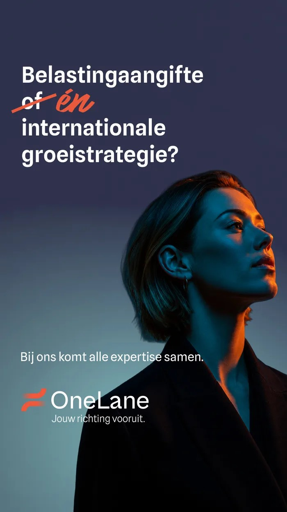
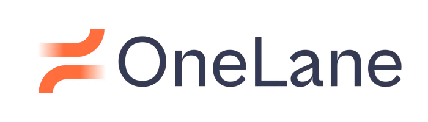

Rebrandingcampagne NOVA
Campagne-evaluatie
5 oktober t/m 15 november 2026

D8

Amplifying impact
1
Plan
Amplifying impact
D8
1 · Plan · Briefing, aanpak en planning
De nieuwe naam snel en groots bekend maken
Briefing
De Jong & Laan gaat verder als OneLane. Doel: de naam in korte tijd bekend en herkenbaar maken, met bereik én herhaling.
Doelstelling: 1,6 mln bereik en 4,9 mln contactmomenten.
Aanpak
1
Bereik · video in feed, stories en reels
2
Traffic · afbeeldingen naar de website
3
Remarketing · tag-on video en afbeeldingen
Daaromheen radio en buitenreclame in twee burst flights.
Budget
Offline € 20.165 · radio, NS-stations, snelwegmasten
Online € 15.050 · Meta, LinkedIn, YouTube, Spotify
Ster online video € 2.500 · toegevoegd op 9 nov
Creatie D8 · Media Flii Media
5 okt
12 okt
19 okt
26 okt
2 nov
9 nov
Radio · NPO Radio 1
NS-stations
Snelwegmasten
Online kanalen
Online video · Ster
Amplifying impact

D8
2
Resultaat
Amplifying impact
D8
2 · Resultaat · Totaal
Focus op merkbekendheid geeft resultaat
2,6 mln
Bereik
+55% t.o.v. doel (1,65 mln)
7,6 mln
Contactmomenten
+51% t.o.v. doel (5,1 mln)
€ 5,01
CPM
35% goedkoper dan doel (€ 7,76)
3,0
Frequentie
3% lager dan doel (3,1), vooral door YouTube en Spotify
10.151
Klikken
12% onder doel (11.536)
€ 38.177
Besteed
97% van het budget (€ 39.215)
348
Contactmomenten op de site
alle ingestuurde formulieren
630
Reacties op social
99,8% positief
Amplifying impact
D8
2 · Resultaat · Per kanaal
Targets vs. resultaat
| Kanaal | Besteed | ± doel | Bereik | ± doel | Contactmomenten | ± doel | Frequentie | ± doel | CPM | ± doel |
|---|---|---|---|---|---|---|---|---|---|---|
| Buitenreclame | € 10.000 | 0% | 400.000 | 0% | 1.400.000 | 0% | 3,5 | 0% | € 7,14 | 0% |
| Radio | € 10.165 | 0% | 611.000 | 0% | 1.894.100 | 0% | 3,1 | 0% | € 5,37 | 0% |
| Meta | € 5.835 | −3% | 740.756 | +177% | 2.619.640 | +227% | 3,5 | +18% | € 2,23 | −70% |
| € 5.899 | −10% | 239.260 | +238% | 601.554 | +209% | 2,5 | −9% | € 9,81 | −71% | |
| YouTube | € 2.488 | 0% | 202.673 | +103% | 325.692 | +30% | 1,6 | −36% | € 7,64 | −24% |
| Spotify | € 1.291 | −14% | 194.511 | +489% | 356.986 | +261% | 1,8 | −39% | € 3,62 | −76% |
| Ster | € 2.500 | 0% | 166.667 | 0% | 416.667 | 0% | 2,5 | 0% | € 6,00 | 0% |
| Totaal | € 38.177 | −3% | 2.554.867 | +55% | 7.614.639 | +51% | 3,0 | −3% | € 5,01 | −35% |
Targets na de laatste aanpassing: Meta +€ 500, LinkedIn +€ 1.000, € 500 van Spotify naar YouTube. Buitenreclame, radio en Ster volgens inkoop.
Amplifying impact
D8
2 · Resultaat · Websitebezoek
Meer bezoek en zoekopdrachten met radio & outdoor
Websitebezoeken per dag
Zoekopdrachten op de merknaam (vertoningen)
Radio & outdoor actief
5 okt
12 okt
19 okt
26 okt
2 nov
9 nov
0
200
400
600
GA4 en Google Search Console, 5 okt t/m 15 nov. Met radio & outdoor gemiddeld 276 bezoeken en 150 merkzoekopdrachten per dag, zonder 182 en 106.
Amplifying impact
D8
2 · Resultaat · Sentiment
De reacties zijn vrijwel volledig positief
| Kanaal | Reacties | Positief | Negatief | Opmerkingen | Gedeeld | Opgeslagen |
|---|---|---|---|---|---|---|
| Meta | 560 | 559 | 1 | 6 | 30 | 37 |
| 68 | 68 | 0 | 4 | 2 | − | |
| YouTube | 2 | 2 | 0 | 0 | − | − |
| Totaal | 630 | 629 | 1 | 10 | 32 | 37 |
99,8%
positief: 629 van de 630 reacties, met één boze reactie op Meta.
Opgepikt door de vakpers
De nieuwe naam verscheen bij SRA en Accountant.nl.
Advertenties op Meta, LinkedIn en YouTube, 5 okt t/m 15 nov.
Amplifying impact
D8
3
Inzichten
Amplifying impact
D8
3 · Inzichten · Key insights
Vijf dingen die we nu weten
1
Grote toename in merkbekendheid tijdens campagne periodes op Radio & Outdoor
- 52% meer websitebezoek op dagen met radio en outdoor: 276 tegen 182 per dag
- 42% meer zoekopdrachten op de merknaam: 150 tegen 106 per dag
2
Meta voor bereik, LinkedIn voor de doelgroep
- Meta 4,4× goedkoper per contactmoment (€ 2,23 tegen € 9,81)
- LinkedIn-bezoekers blijven langer: 1:49 tegen 0:41 min
3
Instagram haalt bezoekers, Facebook kijkers
- Instagram: 3,4× zoveel websitebezoek per 1.000 vertoningen
- Facebook: video 2,3× zo vaak helemaal bekeken
4
Kort wint
- Tag-on van 6 sec 31× zo vaak helemaal bekeken als de video van 20 sec
- Sterk als herinnering na de brede video
5
Groot Engelstalig publiek
- 1 op 5 bezoeken is Engelstalig, net als 60 van de 348 contactmomenten
- Advies: Engelse site volwaardig maken, met alle diensten en een eigen aanvraagroute
Amplifying impact
D8
3 · Inzichten · Kanalen vergeleken
Zoekers en directe bezoekers presteren het best
| Bron | Bezoeken | Gem. sessieduur | Betrokken bezoek | Contact | Per 100 bezoeken |
|---|---|---|---|---|---|
| Google zoeken (organisch) | 4.015 | 3:19 | 69% | 148 | 3,7 |
| Google zoekadvertenties | 1.549 | 2:35 | 67% | 35 | 2,3 |
| Direct (o.a. na radio en outdoor) | 2.932 | 3:17 | 60% | 96 | 3,3 |
| 307 | 1:49 | 75% | 3 | 1,0 | |
| Meta (Facebook en Instagram) | 118 | 0:41 | 67% | 0 | 0 |
- Zoekers en directe bezoekers blijven ruim 3 minuten en nemen het vaakst contact op: 3 tot 4 keer per 100 bezoeken.
- Social-bezoekers oriënteren kort: LinkedIn 1:49 en Meta 0:41 minuten, met weinig contact.
GA4, 5 okt t/m 15 nov. YouTube en Spotify zijn in GA4 niet als bron zichtbaar. Contactmomenten = ingestuurde formulieren.
Amplifying impact
D8
3 · Inzichten · Website
Het bezoek groeit sinds de start
10.151
Websitebezoeken
+91%
Bezoek per week
Laatste campagneweek tegen de eerste
+144%
Zoekverkeer via Google
Laatste campagneweek tegen de eerste
348 keer contact
Via ingestuurde formulieren, waarvan 60 Engelstalig.
Daarvan 25 contact- en adviesaanvragen.
Ingestuurde formulieren per pagina
| Pagina | Aantal |
|---|---|
| Homepage (NL en EN) | 167 |
| Locatiepagina’s | 32 |
| Nieuwsbericht nieuwe naam | 27 |
| Kennis & inzichten | 24 |
| Pagina | Aantal |
|---|---|
| Contactpagina | 20 |
| Ons verhaal (NL en EN) | 16 |
| Actualiteiten | 12 |
| Plan een adviesgesprek | 5 |
Amplifying impact
D8
3 · Inzichten · Learnings & vervolg
Wat we meenemen
Learnings
Radio bouwt status, online zorgt voor actie
Op radiodagen 2,4 keer zoveel zoekverkeer en 57% meer direct bezoek. Klikken naar de site komen vooral uit online.
Video, tag-on en afbeelding werken als keten
De video vertelt het verhaal en bouwt doelgroepen, de tag-on zorgt voor herkenning (5 keer zo vaak afgekeken) en de afbeelding haalt de bezoeker binnen (2% CTR).
Branding miste een concrete call-to-action
Contact via de site komt vooral via zoeken en direct, nauwelijks via advertentieklikken. Geef een duidelijke vervolgstap mee, zoals een adviesgesprek.
Volgende keer beter
Ingeboekt materiaal nalopen
De radio-tag-on was in flight 1 niet ingeboekt. Dit is achteraf hersteld met een 20% uitbreiding van zendtijd in de 2e flight.
Meetbaarheid
Koppeling oud GA4 domein, geen dynamische UTM-tags en instellen van conversiedoelen; nu herkent GA4 maar beperkt de herkomst van advertentiebezoeken en contacten.
Remarketing vroeg vullen
Remarketing groepen zijn met de huidige campagne opgebouwd en voldoende groot om met vervolg campagnes aan te spreken op YouTube & Spotify.
Amplifying impact
D8
3 · Inzichten · Vervolg
What’s next?
Meetbaarheid op orde
Aanleiding: YouTube- en Spotify-bezoek is niet zichtbaar; advertentiebezoek komt binnen als direct.
Actie: UTM-tags op alle advertenties en alle contactmomenten als conversiedoel.
Doorlopende conversiecampagne
Aanleiding: 348 keer contact via de site, maar nauwelijks vanuit advertentieklikken.
Actie: Altijd-aan campagne gericht op het adviesgesprek, met een duidelijke call-to-action.
Remarketing op opgebouwde doelgroepen
Aanleiding: 2,6 mln mensen bereikt en ruim 300.000 videoweergaven op Meta en LinkedIn.
Actie: Tag-on en actiegerichte beelden tonen aan videokijkers en websitebezoekers.
Engelstalig publiek bedienen
Aanleiding: 1 op 5 bezoeken is Engelstalig; 60 van de 348 contactmomenten kwamen van Engelstaligen.
Actie: Engelse site volwaardig maken en een Engelstalige campagnevariant opzetten.
Merkbekendheid meten
Aanleiding: Zoekverkeer op de merknaam steeg sterk tijdens radio en outdoor.
Actie: Brand lift study of een nul- en nameting naar naamsbekendheid.
LinkedIn scherper inzetten
Aanleiding: Eigenaren en accountancy klikten twee tot drie keer zo vaak.
Actie: Budget richten op beslissers en de best presterende sectoren.
Amplifying impact
D8
Bedankt
D8
Amplifying impact